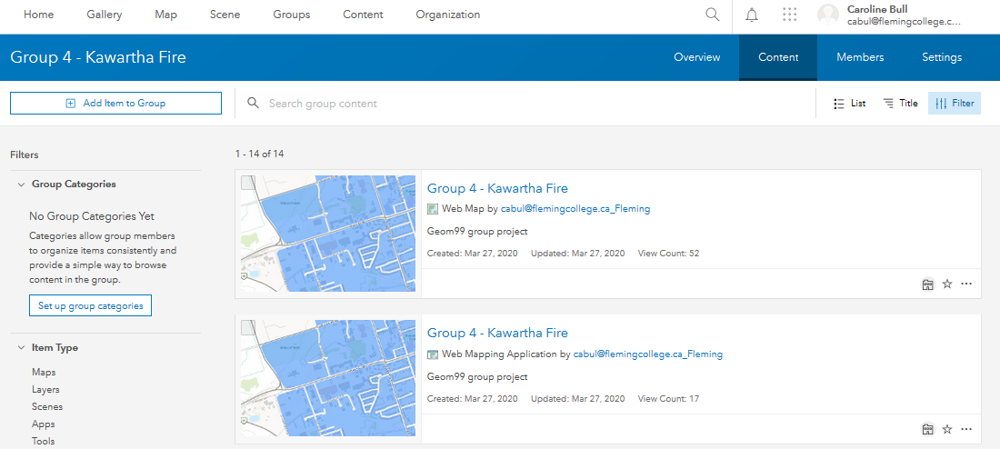
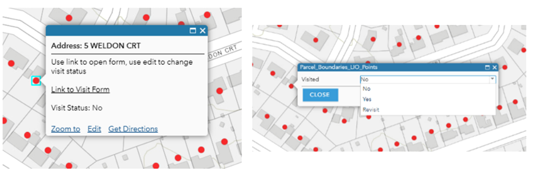

Maps not showing in collector app
Initial Road Block
After creating some sample data and a web app on ArcGIS Online using our Organization accounts these were not appearing in the Collector app.
The Solution
After further research we created a group with our team members added in as well as our feature layers and meb map.
Using a group in our ArcGIS organization to share the map will allow the mobile workers to collect data in the field.

Using Collector
Initial Road Block
Using the Collector app to view our test map we realized our next challenge was how to integrate the survey questions.
Work Around
We explored two different approaches:
1. Set up related tables for use in Collector, editing the tables fields to reflect the questions.
2. Create a survey using Survey123 app, link to Collector for collecting data in the field.
The Solution
With prior knowledge of Survey123 and the project requirements option 2 made more sense. In the future, the survey will be easy to manage if questions change etc.
Approach 1 testing:
<
Linking To The Survey with Pop Up Issues:
Initial Roadblock
It was initially difficult to get both the link to the survey and the ability to display and edit the "Visited" field in the pop-up. Originally, the link was the only thing visible using a custom attribute display. But the user needed to be able to change the visit status to show which properties had been visited.

Work Around
After some investigation into the pop-up configuration settings it was found that you could have a list of attributes and show media at the same time. This became even more useful as you could associate a link with an image, this was the method we ended up using. This added an extra layer of challenge as we wanted to use an image that would give the user some sense of the function, while also respecting copyright and licensing. One of us created a simple logo to use without risking misusing another's work, and then came the issue of uploading the image. Adding an image to a pop-up requires the use of a URL. There was quite a bit of faffing about to figure out how to host the image to be accessed via URL.
The Solution
In the end the solution was painfully simple. It was uploaded to ArcGIS Online, shared publicly (required to get URL), and the URL was added to the pop-up.